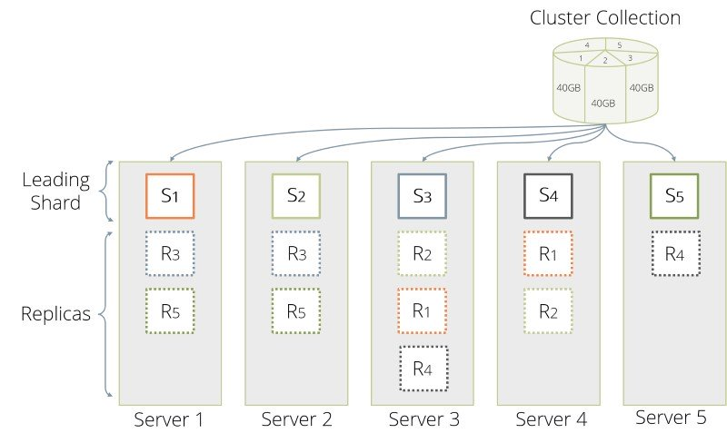

Cluster Architecture
The Cluster architecture of ArangoDB is a CP master/master model with no single point of failure.
With “CP” in terms of the CAP theorem we mean that in the presence of a network partition, the database prefers internal consistency over availability. With “master/master” we mean that clients can send their requests to an arbitrary node, and experience the same view on the database regardless. “No single point of failure” means that the cluster can continue to serve requests, even if one machine fails completely.
In this way, ArangoDB has been designed as a distributed multi-model database. This section gives a short outline on the Cluster architecture and how the above features and capabilities are achieved.
Structure of an ArangoDB Cluster
An ArangoDB Cluster consists of a number of ArangoDB instances which talk to each other over the network. They play different roles, which will be explained in detail below.
The current configuration of the Cluster is held in the Agency, which is a highly-available resilient key/value store based on an odd number of ArangoDB instances running Raft Consensus Protocol.
For the various instances in an ArangoDB Cluster there are three distinct roles:
- Agents
- Coordinators
- DB-Servers.
In the following sections we will shed light on each of them.

Agents
One or multiple Agents form the Agency in an ArangoDB Cluster. The Agency is the central place to store the configuration in a Cluster. It performs leader elections and provides other synchronization services for the whole Cluster. Without the Agency none of the other components can operate.
While generally invisible to the outside the Agency is the heart of the Cluster. As such, fault tolerance is of course a must have for the Agency. To achieve that the Agents are using the Raft Consensus Algorithm. The algorithm formally guarantees conflict free configuration management within the ArangoDB Cluster.
At its core the Agency manages a big configuration tree. It supports transactional read and write operations on this tree, and other servers can subscribe to HTTP callbacks for all changes to the tree.
Coordinators
Coordinators should be accessible from the outside. These are the ones the clients talk to. They will coordinate cluster tasks like executing queries and running Foxx services. They know where the data is stored and will optimize where to run user supplied queries or parts thereof. Coordinators are stateless and can thus easily be shut down and restarted as needed.
DB-Servers
DB-Servers are the ones where the data is actually hosted. They host shards of data and using synchronous replication a DB-Server may either be leader or follower for a shard. Document operations are first applied on the leader and then synchronously replicated to all followers.
Shards must not be accessed from the outside but indirectly through the Coordinators. They may also execute queries in part or as a whole when asked by a Coordinator.
See Sharding below for more information.
Many sensible configurations
This architecture is very flexible and thus allows many configurations, which are suitable for different usage scenarios:
- The default configuration is to run exactly one Coordinator and one DB-Server on each machine. This achieves the classical master/master setup, since there is a perfect symmetry between the different nodes, clients can equally well talk to any one of the Coordinators and all expose the same view to the data store. Agents can run on separate, less powerful machines.
- One can deploy more Coordinators than DB-Servers. This is a sensible approach if one needs a lot of CPU power for the Foxx services, because they run on the Coordinators.
- One can deploy more DB-Servers than Coordinators if more data capacity is needed and the query performance is the lesser bottleneck
- One can deploy a Coordinator on each machine where an application server (e.g. a node.js server) runs, and the Agents and DB-Servers on a separate set of machines elsewhere. This avoids a network hop between the application server and the database and thus decreases latency. Essentially, this moves some of the database distribution logic to the machine where the client runs.
As you can see, the Coordinator layer can be scaled and deployed independently from the DB-Server layer.
It is a best practice and a recommended approach to run Agent instances on different machines than DB-Server instances.
When deploying using the tool Starter
this can be achieved by using the options --cluster.start-dbserver=false and
--cluster.start-coordinator=false on the first three machines where the Starter
is started, if the desired Agency size is 3, or on the first 5 machines
if the desired Agency size is 5.
The different instances that form a Cluster are supposed to be run in the same Data Center (DC), with reliable and high-speed network connection between all the machines participating to the Cluster.
Multi-datacenter Clusters, where the entire structure and content of a Cluster located in a specific DC is replicated to others Clusters located in different DCs, are possible as well. See Datacenter to datacenter replication (DC2DC) for further details.
Sharding
Using the roles outlined above an ArangoDB Cluster is able to distribute data in so called shards across multiple DB-Servers. Sharding allows to use multiple machines to run a cluster of ArangoDB instances that together constitute a single database. This enables you to store much more data, since ArangoDB distributes the data automatically to the different servers. In many situations one can also reap a benefit in data throughput, again because the load can be distributed to multiple machines.

From the outside this process is fully transparent: An application may talk to any Coordinator and it will automatically figure out where the data is currently stored (read-case) or is to be stored (write-case). The information about the shards is shared across all Coordinators using the Agency.
Shards are configured per collection so multiple shards of data form the collection as a whole. To determine in which shard the data is to be stored ArangoDB performs a hash across the values. By default this hash is being created from the document _key.
For further information, please refer to the Cluster Sharding section.
OneShard
The OneShard option is only available in the Enterprise Edition and in the ArangoDB Cloud. Take this feature for a spin in just a few clicks with the 14-day free trial.
A OneShard deployment offers a practicable solution that enables significant performance improvements by massively reducing cluster-internal communication and allows running transactions with ACID guarantees on shard leaders.
By restricting collections to a single shard and placing them on one DB-Server node, whole queries can be pushed to and executed on that server. The Coordinator will only get back the final result. This setup is highly recommended for most graph use cases and join-heavy queries.
For graphs larger than what fits on a single DB-Server node, you can use the SmartGraphs feature to efficiently limit the network hops between Coordinator and DB-Servers.
Without the OneShard feature query processing works as follows in a cluster:
- The Coordinator accepts and analyzes the query.
- If collections are accessed then the Coordinator distributes the accesses to collections to different DB-Servers that hold parts (shards) of the collections in question.
- This distributed access requires network-traffic from Coordinator to DB-Servers and back from DB-Servers to Coordinators and is therefore expensive.
Another cost factor is the memory and CPU time required on the Coordinator when it has to process several concurrent complex queries. In such situations Coordinators may become a bottleneck in query processing, because they need to send and receive data on several connections, build up results for collection accesses from the received parts followed by further processing.

If the database involved in a query is a OneShard database, then the OneShard optimization is applied to run the query on the responsible node like on a single server. However, it still being a cluster setup means collections can be replicated synchronously to ensure resilience etc.
How to use the OneShard feature?
The OneShard feature is enabled by default if you use the ArangoDB
Enterprise Edition and if the database is sharded as "single". In this case the
optimizer rule cluster-one-shard is applied automatically.
There are two ways to achieve this:
-
If you want your entire cluster to be a OneShard deployment, use the startup option
--cluster.force-one-shard. It sets the immutableshardingdatabase property to"single"for all newly created databases, which in turn enforces the OneShard conditions for collections that will be created in it. The_graphssystem collection will be used fordistributeShardsLike. -
For individual OneShard databases, set the
shardingdatabase property to"single"to enforce the OneShard condition. The_graphssystem collection will be used fordistributeShardsLike. It is not possible to change theshardingdatabase property afterwards or overwrite this setting for individual collections. For non-OneShard databases the value of theshardingdatabase property is either""or"flexible".
The prototype collection does not only control the sharding, but also the
replication factor for all collections which follow its example. If the
_graphs system collection is used for distributeShardsLike, then the
replication factor can be adjusted by changing the replicationFactor
property of the _graphs collection (affecting this and all following
collections) or via the startup option --cluster.system-replication-factor
(affecting all system collections and all following collections).
Example
The easiest way to make use of the OneShard feature is to create a database
with the extra option { sharding: "single" }. As done in the following
example:
arangosh> db._createDatabase("oneShardDB", { sharding: "single" } )
arangosh> db._useDatabase("oneShardDB")
arangosh@oneShardDB> db._properties()
{
"id" : "6010005",
"name" : "oneShardDB",
"isSystem" : false,
"sharding" : "single",
"replicationFactor" : 1,
"writeConcern" : 1,
"path" : ""
}
Now we can go ahead and create a collection as usual:
arangosh@oneShardDB> db._create("example1")
arangosh@oneShardDB> db.example1.properties()
{
"isSmart" : false,
"isSystem" : false,
"waitForSync" : false,
"shardKeys" : [
"_key"
],
"numberOfShards" : 1,
"keyOptions" : {
"allowUserKeys" : true,
"type" : "traditional"
},
"replicationFactor" : 2,
"minReplicationFactor" : 1,
"writeConcern" : 1,
"distributeShardsLike" : "_graphs",
"shardingStrategy" : "hash",
"cacheEnabled" : false
}
As you can see the numberOfShards is set to 1 and distributeShardsLike
is set to _graphs. These attributes have been automatically been set
because we specified the { "sharding": "single" } options object when
creating the database.
To do this manually for individual collections, use { "sharding": "flexible" }
on the database level and then create a collection in the following way:
db._create("example2", { "numberOfShards": 1 , "distributeShardsLike": "_graphs" })
Here we used the _graphs collection again, but any other existing
collection that has not been created with the distributeShardsLike
option itself can be used as well in a flexibly sharded database.
Running Queries
For this arangosh example, we first insert a few documents into a collection, then create a query and explain it to inspect the execution plan.
arangosh@oneShardDB> for (let i = 0; i < 10000; i++) { db.example.insert({ "value" : i }); }
arangosh@oneShardDB> q = "FOR doc IN @@collection FILTER doc.value % 2 == 0 SORT doc.value ASC LIMIT 10 RETURN doc";
arangosh@oneShardDB> db._explain(q, { "@collection" : "example" })
Query String (88 chars, cacheable: true):
FOR doc IN @@collection FILTER doc.value % 2 == 0 SORT doc.value ASC LIMIT 10 RETURN doc
Execution plan:
Id NodeType Site Est. Comment
1 SingletonNode DBS 1 * ROOT
2 EnumerateCollectionNode DBS 10000 - FOR doc IN example /* full collection scan, 1 shard(s) */ FILTER ((doc.`value` % 2) == 0) /* early pruning */
5 CalculationNode DBS 10000 - LET #3 = doc.`value` /* attribute expression */ /* collections used: doc : example */
6 SortNode DBS 10000 - SORT #3 ASC /* sorting strategy: constrained heap */
7 LimitNode DBS 10 - LIMIT 0, 10
9 RemoteNode COOR 10 - REMOTE
10 GatherNode COOR 10 - GATHER
8 ReturnNode COOR 10 - RETURN doc
Indexes used:
none
Optimization rules applied:
Id RuleName
1 move-calculations-up
2 move-filters-up
3 move-calculations-up-2
4 move-filters-up-2
5 cluster-one-shard
6 sort-limit
7 move-filters-into-enumerate
As it can be seen in the explain output almost the complete query is
executed on the DB-Server (DBS for nodes 1-7) and only 10 documents are
transferred to the Coordinator. In case we do the same with a collection
that consists of several shards we get a different result:
arangosh> db._createDatabase("shardedDB")
arangosh> db._useDatabase("shardedDB")
arangosh@shardedDB> db._properties()
{
"id" : "6010017",
"name" : "shardedDB",
"isSystem" : false,
"sharding" : "flexible",
"replicationFactor" : 1,
"writeConcern" : 1,
"path" : ""
}
arangosh@shardedDB> db._create("example", { numberOfShards : 5})
arangosh@shardedDB> for (let i = 0; i < 10000; i++) { db.example.insert({ "value" : i }); }
arangosh@shardedDB> db._explain(q, { "@collection" : "example" })
Query String (88 chars, cacheable: true):
FOR doc IN @@collection FILTER doc.value % 2 == 0 SORT doc.value ASC LIMIT 10 RETURN doc
Execution plan:
Id NodeType Site Est. Comment
1 SingletonNode DBS 1 * ROOT
2 EnumerateCollectionNode DBS 10000 - FOR doc IN example /* full collection scan, 5 shard(s) */ FILTER ((doc.`value` % 2) == 0) /* early pruning */
5 CalculationNode DBS 10000 - LET #3 = doc.`value` /* attribute expression */ /* collections used: doc : example */
6 SortNode DBS 10000 - SORT #3 ASC /* sorting strategy: constrained heap */
11 RemoteNode COOR 10000 - REMOTE
12 GatherNode COOR 10000 - GATHER #3 ASC /* parallel, sort mode: heap */
7 LimitNode COOR 10 - LIMIT 0, 10
8 ReturnNode COOR 10 - RETURN doc
Indexes used:
none
Optimization rules applied:
Id RuleName
1 move-calculations-up
2 move-filters-up
3 move-calculations-up-2
4 move-filters-up-2
5 scatter-in-cluster
6 distribute-filtercalc-to-cluster
7 distribute-sort-to-cluster
8 remove-unnecessary-remote-scatter
9 sort-limit
10 move-filters-into-enumerate
11 parallelize-gather
It can be checked whether the OneShard feature is active or not by
inspecting the explain output. If the list of rules contains
cluster-one-shard then the feature is active for the given query.
Without the OneShard feature all documents have potentially to be sent to
the Coordinator for further processing. With this simple query this is actually
not true, because some other optimizations are performed that reduce the number
of documents. But still, a considerable amount of documents has to be
transferred from DB-Server to Coordinator only to apply a LIMIT of 10
documents there. The estimate for the RemoteNode is 10,000 in this example,
whereas it is 10 in the OneShard case.
ACID Transactions on Leader Shards
ArangoDB’s transactional guarantees are tunable. For transactions to be ACID on the leader shards in a cluster, a few things need to be considered:
- The AQL query or Stream Transaction must be eligible for the OneShard optimization, so that it is executed on a single DB-Server node.
- To ensure durability, enable
waitForSyncon query level to wait until data modifications have been written to disk. - The collection option
writeConcern: 2makes sure that a transaction is only successful if at least one replica is in sync. - The RocksDB engine supports intermediate commits for larger document
operations, potentially breaking the atomicity of transactions. To prevent
this for individual queries you can increase
intermediateCommitSize(default 512 MB) andintermediateCommitCountaccordingly as query option.
Synchronous replication
In an ArangoDB Cluster, the replication among the data stored by the DB-Servers is synchronous.
Synchronous replication works on a per-shard basis. Using the option replicationFactor, one configures for each collection how many copies of each shard are kept in the Cluster.
If a collection has a replication factor of 1, its data is not replicated to other DB-Servers. This exposes you to a risk of data loss, if the machine running the DB-Server with the only copy of the data fails permanently.
The replication factor has to be set to a value equals or higher than 2 to achieve minimal data redundancy via the synchronous replication.
An equal-or-higher-than 2 replication factor has to be set explicitly when the collection is created, or can be set later at run time if you forgot to set it at creation time.
When using a Cluster, please make sure all the collections that are important (and should not be lost in any case) have a replication factor equal or higher than 2.
At any given time, one of the copies is declared to be the leader and all other replicas are followers. Internally, write operations for this shard are always sent to the DB-Server which happens to hold the leader copy, which in turn replicates the changes to all followers before the operation is considered to be done and reported back to the Coordinator. Internally, read operations are all served by the DB-Server holding the leader copy, this allows to provide snapshot semantics for complex transactions.
Using synchronous replication alone will guarantee consistency and high availability at the cost of reduced performance: write requests will have a higher latency (due to every write-request having to be executed on the followers) and read requests will not scale out as only the leader is being asked.
In a Cluster, synchronous replication will be managed by the Coordinators for the client. The data will always be stored on the DB-Servers.
The following example will give you an idea of how synchronous operation has been implemented in ArangoDB Cluster:
- Connect to a Coordinator via arangosh
-
Create a collection
127.0.0.1:8530@_system> db._create(“test”, {“replicationFactor”: 2})
- The Coordinator will figure out a leader and one follower and create one shard (as this is the default)
-
Insert data
127.0.0.1:8530@_system> db.test.insert({“foo”: “bar”})
- The Coordinator will write the data to the leader, which in turn will replicate it to the follower.
-
Only when both were successful the result is reported to be successful:
{ "_id" : "test/7987", "_key" : "7987", "_rev" : "7987" }
Obviously, synchronous replication comes at the cost of an increased latency for write operations, simply because there is one more network hop within the Cluster for every request. Therefore the user can set the replicationFactor to 1, which means that only one copy of each shard is kept, thereby switching off synchronous replication. This is a suitable setting for less important or easily recoverable data for which low latency write operations matter.
Automatic failover
Failure of a follower
If a DB-Server that holds a follower copy of a shard fails, then the leader can no longer synchronize its changes to that follower. After a short timeout (3 seconds), the leader gives up on the follower and declares it to be out of sync.
One of the following two cases can happen:
a) If another DB-Server (that does not hold a replica for this shard already) is available in the Cluster, a new follower will automatically be created on this other DB-Server (so the replication factor constraint is satisfied again).
b) If no other DB-Server (that does not hold a replica for this shard already) is available, the service continues with one follower less than the number prescribed by the replication factor.
If the old DB-Server with the follower copy comes back, one of the following two cases can happen:
a) If previously we were in case a), the DB-Server recognizes that there is a new follower that was elected in the meantime, so it will no longer be a follower for that shard.
b) If previously we were in case b), the DB-Server automatically resynchronizes its data with the leader. The replication factor constraint is now satisfied again and order is restored.
Failure of a leader
If a DB-Server that holds a leader copy of a shard fails, then the leader can no longer serve any requests. It will no longer send a heartbeat to the Agency. Therefore, a supervision process running in the Raft leader of the Agency, can take the necessary action (after 15 seconds of missing heartbeats), namely to promote one of the DB-Servers that hold in-sync replicas of the shard to leader for that shard. This involves a reconfiguration in the Agency and leads to the fact that Coordinators now contact a different DB-Server for requests to this shard. Service resumes. The other surviving replicas automatically resynchronize their data with the new leader.
In addition to the above, one of the following two cases cases can happen:
a) If another DB-Server (that does not hold a replica for this shard already) is available in the Cluster, a new follower will automatically be created on this other DB-Server (so the replication factor constraint is satisfied again). b) If no other DB-Server (that does not hold a replica for this shard already) is available the service continues with one follower less than the number prescribed by the replication factor.
When the DB-Server with the original leader copy comes back, it recognizes that a new leader was elected in the meantime, and one of the following two cases can happen:
a) If previously we were in case a), since also a new follower was created and the replication factor constraint is satisfied, the DB-Server will no longer be a follower for that shard. b) If previously we were in case b), the DB-Server notices that it now holds a follower replica of that shard and it resynchronizes its data with the new leader. The replication factor constraint is now satisfied again, and order is restored.
The following example will give you an idea of how failover has been implemented in ArangoDB Cluster:
- The leader of a shard (let’s name it DBServer001) is going down.
-
A Coordinator is asked to return a document:
127.0.0.1:8530@_system> db.test.document(“100069”)
- The Coordinator determines which server is responsible for this document and finds DBServer001
- The Coordinator tries to contact DBServer001 and timeouts because it is not reachable.
- After a short while the supervision (running in parallel on the Agency) will see that heartbeats from DBServer001 are not coming in
- The supervision promotes one of the followers (say DBServer002), that is in sync, to be leader and makes DBServer001 a follower.
- As the Coordinator continues trying to fetch the document it will see that the leader changed to DBServer002
-
The Coordinator tries to contact the new leader (DBServer002) and returns the result:
{ "_key" : "100069", "_id" : "test/100069", "_rev" : "513", "foo" : "bar" } - After a while the supervision declares DBServer001 to be completely dead.
- A new follower is determined from the pool of DB-Servers.
- The new follower syncs its data from the leader and order is restored.
Please note that there may still be timeouts. Depending on when exactly the request has been done (in regard to the supervision) and depending on the time needed to reconfigure the Cluster the Coordinator might fail with a timeout error.
Shard movement and resynchronization
All shard data synchronizations are done in an incremental way, such that resynchronizations are quick. This technology allows to move shards (follower and leader ones) between DB-Servers without service interruptions. Therefore, an ArangoDB Cluster can move all the data on a specific DB-Server to other DB-Servers and then shut down that server in a controlled way. This allows to scale down an ArangoDB Cluster without service interruption, loss of fault tolerance or data loss. Furthermore, one can re-balance the distribution of the shards, either manually or automatically.
All these operations can be triggered via a REST/JSON API or via the graphical web UI. All fail-over operations are completely handled within the ArangoDB Cluster.
Microservices and zero administation
The design and capabilities of ArangoDB are geared towards usage in modern microservice architectures of applications. With the Foxx services it is very easy to deploy a data centric microservice within an ArangoDB Cluster.
In addition, one can deploy multiple instances of ArangoDB within the same project. One part of the project might need a scalable document store, another might need a graph database, and yet another might need the full power of a multi-model database actually mixing the various data models. There are enormous efficiency benefits to be reaped by being able to use a single technology for various roles in a project.
To simplify life of the devops in such a scenario we try as much as possible to use a zero administration approach for ArangoDB. A running ArangoDB Cluster is resilient against failures and essentially repairs itself in case of temporary failures.
Deployment
An ArangoDB Cluster can be deployed in several ways, e.g. by manually starting all the needed instances, by using the tool Starter, in Docker and in Kubernetes.
See the Cluster Deployment chapter for instructions.
ArangoDB is also available as cloud service - ArangoDB Oasis. You can fire up your cluster in just a few clicks with the 14-day free trial.
Cluster ID
Every ArangoDB instance in a Cluster is assigned a unique ID during its startup. Using its ID a node is identifiable throughout the Cluster. All cluster operations will communicate via this ID.